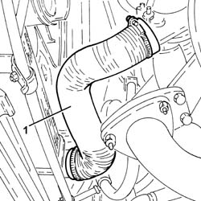
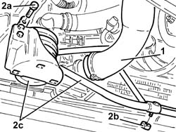
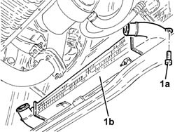
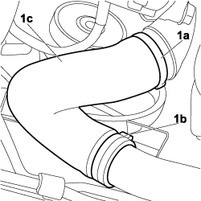

1048B50 turbo charger intercooler - r + r
- Path
- Procedures > 10 ENGINE > 1048 ENGINE AIR SUPPLY CIRCUIT > 1048B PRESSURE AIR CIRCUIT > 1048B50 turbo charger intercooler - r + r
- Kind
- repair procedure (removal / refitting; the operation number is the code)
- Applies to
- engines: 1.9 JTD 8V; all production periods
- Interactive page
- https://sloeber94.github.io/elrnDB-fDbl/en/#/2584490
Applies to: engines: 1.9 JTD 8V; all production periods
 Removing
Removing
 Refitting
RefittingPosition the vehicle on a lift.
Proceed with the removal
Proceed with the removal
Op. 5530B52 BATTERY SUPPORT/DRIP TRAY - R.R..
Proceed with the removal
Op. 7055B54 PROTECTION/GUARD UNDER ENGINE - R.R..
Proceed with the removal
Op. 1048A10 AIR FILTER ASSEMBLY - R.R..
1. Loosen the bands and remove the rigid air supply pipe between the turbocharger and the heat exchanger.

Applies to: engines: 1.9 JTD 8V; all production periods
1. Loosen the band and disconnect the air outlet hose from the heat exchanger.
2. Unscrew bolt (2a) and nuts (2b) and move power steering system heat exchanger (2c) aside as far as necessary.

Applies to: engines: 1.9 JTD 8V; all production periods
1. Undo the bolts and remove the supercharging air/air heat exchanger (1b).

Applies to: engines: 1.9 JTD 8V; all production periods
Refitting
RemovingPlace the turbocharging air/air heat exchanger in its housing and secure it using the bolts.
Refit the power steering system heat exchanger in its seat and secure with the nuts and bolt.
Connect the air outlet hose from the heat exchanger and tighten the band.
Place the air supply hose between the turbocharger and the heat exchanger in position and tighten the bands.
Proceed with the refitting
Op. 1048A10 AIR FILTER ASSEMBLY - R.R..
Proceed with the refitting
Op. 7055B54 PROTECTION/GUARD UNDER ENGINE - R.R..
Proceed with the refitting
Op. 5530B52 BATTERY SUPPORT/DRIP TRAY - R.R..
Proceed with the refitting
Remove the vehicle from the lift.
Applies to: engines: 1.9 JTD 8V; production: da 12/03; only with equipment: MY 2005
Removing
RefittingPosition the vehicle on a lift.
Op. 5530B52 BATTERY SUPPORT/DRIP TRAY - R.R.
Op. 1048A10 AIR FILTER ASSEMBLY - R.R.
Op. 7055B54 PROTECTION/GUARD UNDER ENGINE - R.R.
1. Use the appropriate tool to remove retaining collars (1a) and (1b), then disconnect sleeve (1c) carrying air between the turbocharger and heat exchanger and remove it from the vehicle.

Applies to: engines: 1.9 JTD 8V; production: da 12/03; only with equipment: MY 2005
1. Use the appropriate tool to remove retaining collars (1a) and (1b), then disconnect sleeve (1c) carrying air from the heat exchanger and to the rigid pipe and remove it from the vehicle.

Applies to: engines: 1.9 JTD 8V; production: da 12/03; only with equipment: MY 2005
1. Loosen the band and disconnect the air outlet hose from the heat exchanger.
2. Unscrew bolt (2a) and nuts (2b) and move power steering system heat exchanger (2c) aside as far as necessary.
Applies to: engines: 1.9 JTD 8V; production: da 12/03; only with equipment: MY 2005
1. Undo the bolts and remove the supercharging air/air heat exchanger (1b).
Applies to: engines: 1.9 JTD 8V; production: da 12/03; only with equipment: MY 2005
Refitting
Removing- Place the supercharging air/air heat exchanger in its housing and secure it using the bolts.
- Place the supercharging air/air heat exchanger in its housing and secure it using the bolts.
- Refit the power steering system heat exchanger in its seat and secure with the nuts and bolt.
- Connect the air outlet hose from the heat exchanger and secure with a new band.
- Connect the air supply hose from the heat exchanger to the rigid pipe and secure it using new bands.
- Connect the air supply hose between the turbocharger and the heat exchanger and secure it using new bands.
Op. 7055B54 PROTECTION/GUARD UNDER ENGINE - R.R.
Op. 1048A10 AIR FILTER ASSEMBLY - R.R.
Op. 5530B52 BATTERY SUPPORT/DRIP TRAY - R.R.
Remove the vehicle from the lift.
Topics linked from this page (4)
- 1048A10 air cleaner filtering element - replace
- 5530B10 battery - r+r
- 5530B52 Battery DRIP TRAY/SUPPORT - R.R.
- 7055B54 under-engine guard - r r